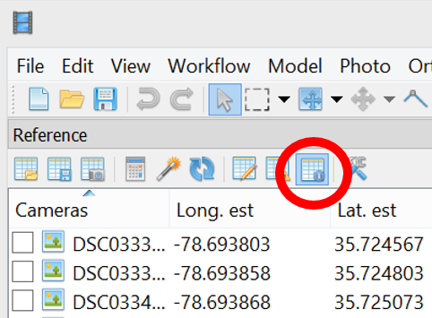

Measurements in Agisoft Photoscan
You will be working with processed data. Because the processing is very time consuming, the processed data (stored in the Agisoft project files) is provided.After opening the 2016_09_22_sample_classroom.psx file, you should see generated orthomosaic and DSM in the Workspace pane.
All you have to do is to indicate the new location of the pictures.
In order to do that right clik on any of the pictures in the Pictures pane and choose Change Path... and in the dialog window mark the All cameras option. This will automatically apply the updated location to all the pictures in the project.
Distance measurement:
Using the Ruler instrument for the toolbar menu calculate the length of the longer side of the building.
Distance between GCPs:
To measure distance between two markers in Agisoft:
- Select both markers to be used for distance measurements on the Reference pane using Ctrl button
- Select Create Scale Bar command form the 3D view context menu. The scale bar will be created and an instant added to the Scale Bar list on the Reference pane.
NOTE: in order to see the estimated values, you need to be in the estimates display - on the Reference pane, following button needs to be active

Distance between cameras
To measure distance between two cameras in Agisoft:
- Select the two cameras on the Workspace or Reference pane using Ctrl button. Alternatively, the cameras can be selected in the Model view window using selecting tools from the Toolbar.
- Select Create Scale Bar command form the 3D view context menu. The scale bar will be created and an instant added to the Scale Bar list on the Reference pane.
Performing measurements on DSMs
Switch to Ortho view (double click on the Orthomosaic in the Workspace pane)
- Using Ruler instrument or Draw Polyline from the Toolbar of the Ortho view and measure a chosen object on the orthophoto.
- Select Generate Contours... command from Tools menu.
- Set round values for Minimal altitude, Maximal altitude parameters as well as the Interval for the contours.
- Set the transparency for the contours for 50% and do not display the labels. (You can do it in Preferences in the Contours context menu in the Workspace pane (contours are in the Shapes folder)
- Indicate a line to make a cut of the model using Draw Polyline tool from the Ortho view toolbar (double click ends the line).
- Right button click on the polyline/polygon and select Measure... command from the context menu.
Point and distance measurement:
Contours:
Cross section:
Choose some interesting place for cross section (you can see from the contours where are some variations in terrain)